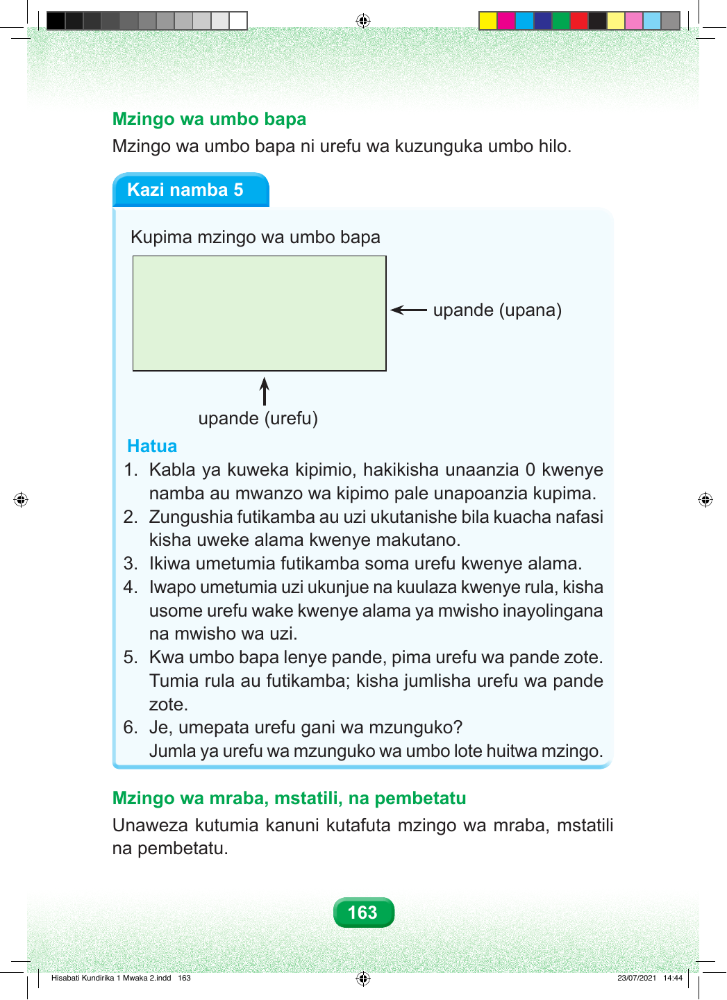

Mzingo wa umbo bapa Mzingo wa umbo bapa ni urefu wa kuzunguka umbo hilo. Kazi namba 5 Kupima mzingo wa umbo bapa upande (upana) upande (urefu) Hatua 1. Kabla ya kuweka kipimio, hakikisha unaanzia 0 kwenye namba au mwanzo wa kipimo pale unapoanzia kupima. 2. Zungushia futikamba au uzi ukutanishe bila kuacha nafasi kisha uweke alama kwenye makutano. 3. Ikiwa umetumia futikamba soma urefu kwenye alama. 4. Iwapo umetumia uzi ukunjue na kuulaza kwenye rula, kisha usome urefu wake kwenye alama ya mwisho inayolingana na mwisho wa uzi. 5. Kwa umbo bapa lenye pande, pima urefu wa pande zote. Tumia rula au futikamba; kisha jumlisha urefu wa pande zote. 6. Je, umepata urefu gani wa mzunguko? Jumla ya urefu wa mzunguko wa umbo lote huitwa mzingo. Mzingo wa mraba, mstatili, na pembetatu Unaweza kutumia kanuni kutafuta mzingo wa mraba, mstatili na pembetatu. 163 Hisabati Kundirika 1 Mwaka 2.indd 163 23/07/2021 14:44